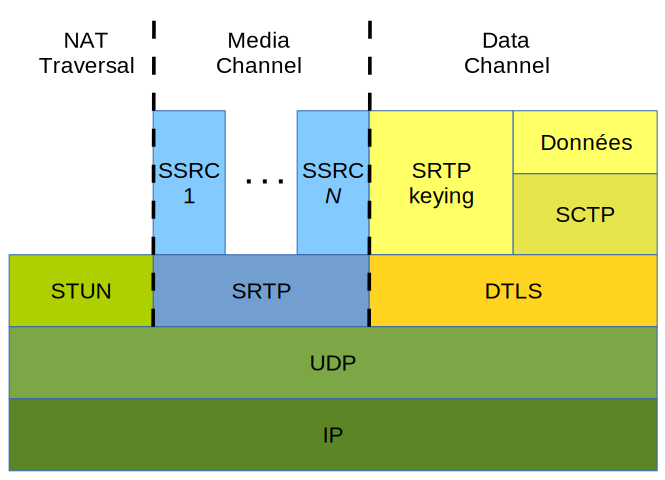
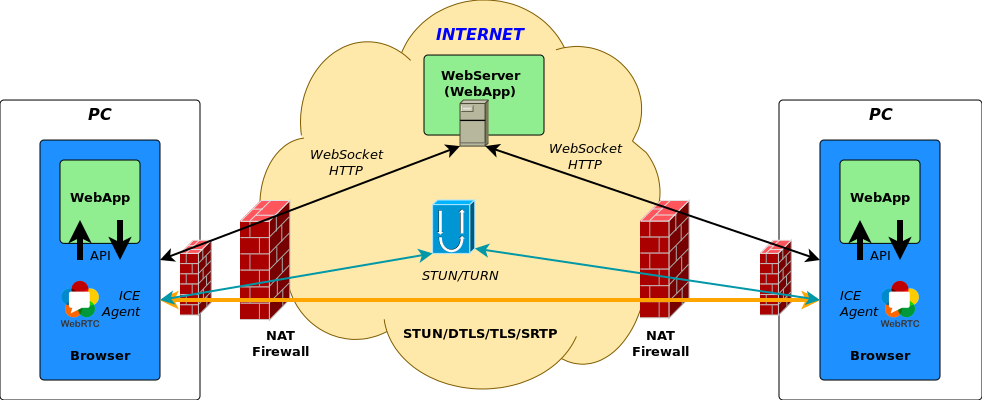
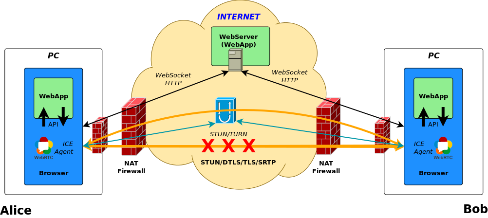
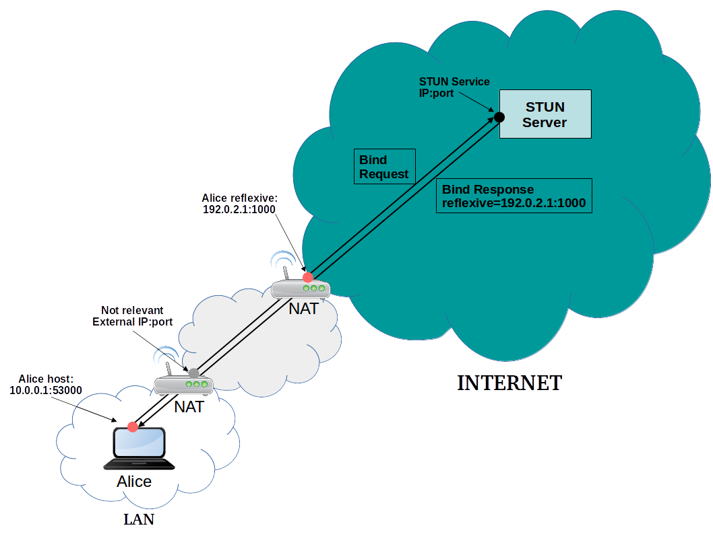
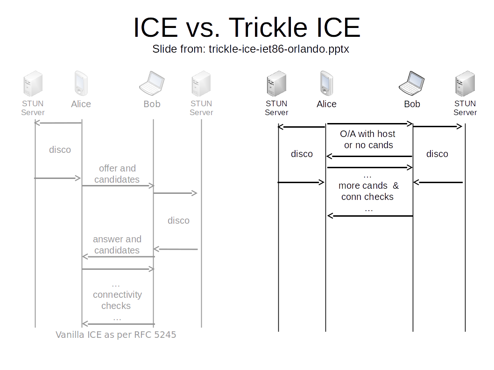
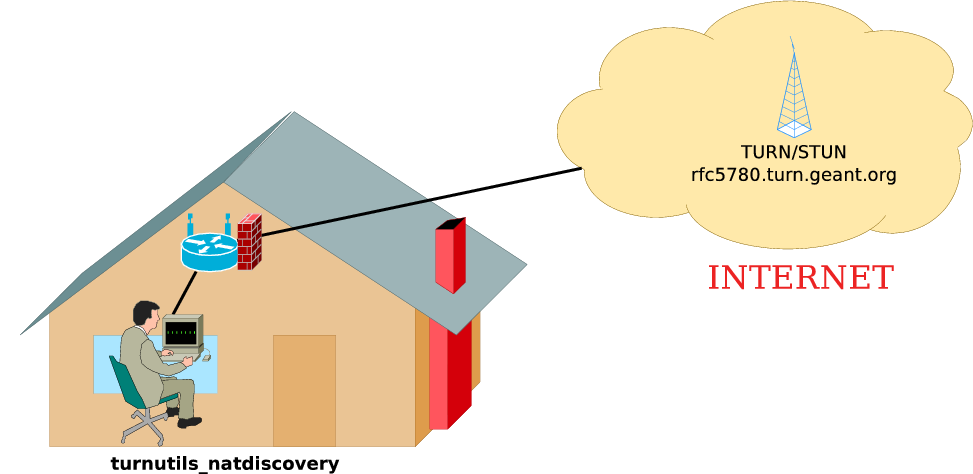

Not used pics
Aside test
WebRTC Definitions and it's Mission:
- WebRTC: “A framework, protocols and application programming interface that provide real time interactive voice, video and data in web browsers and other applications”
- WebRTC is a free, open project that provides browsers and mobile applications with Real-Time Communications (RTC) capabilities via simple APIs. The WebRTC components have been optimized to best serve this purpose.
- Mission: To enable rich, high-quality RTC applications to be developed for the browser, mobile platforms, and IoT devices, and allow them all to communicate via a common set of protocols.
Project Webhttps://webrtc.org
WebRTC Project Logo:

Goals
- Without Plugins
- Without Install
- Multi platform
- Always up2date
- P2P
- Low Delay / Latency / Jitter
- Advanced congestion avoidence
- Adaptive Audio Video encoding
- Firewal Traversal ICE(STUN/TURN)
- Focus on Security and Privacy and Idenity by design
- Native Implementation
- Ultimate freedom in Signaling Level
- WebRTC 1.0 backward compatibility (e.g. SDP and audio codec)
- Encrypted Secure End to End communication
Base components:
- GetUserMedia (GuM): Grab MediaStream from a Mediadevice
- PeerConnection (PC): Establish and Maintain Peer to Peer Connection
WebRTC 1.0
WebRTC NV
- QUIC transport for DataChannel/(Media?)
- More ORTC like deep API
- No more SDP
- More control on ICE Agent
- SVC
Codecs
Mandator to Implement Audio codec
- G711
- Opus
Manadatory to Implement Video codecs
It took a long to build consensus in the IETF RTCWEB workgroup (Codec war)- VP8 vs H.264
- (VP9 vs H.265)
Alliance for Open Media
- AOMedia Video 1 (AV1) development
- Amazon, Cisco, Google, Intel, Microsoft, Mozilla, Netflix, etc.
The begining
- 2009 - Google Chrome Team Idea
- 2010 Summer - IETF 98 Informal lunch (Google, Microsoft, Apple, Mozilla, Skype, Ericsson,etc.)
- 2010 October - RTC Web Workshop http://rtc-web.alvestrand.com/
- 2011 January - Google Global IP Solution (GIPS) acquired.
- 2011 May - W3C WebRTC WG statarted officialy
- 2011 June - Googe Anounce WebRTC project(based on GIPS) and chrome integration
- 2011 Nov - Chrome 23 WebRTC support
Early birds
- 2013 January - Firefox 20 first WebRTC support (only GuM)
- 2013 February - Chrome Mozilla first call interoperability
- 2013 July - Chrome for Android support
- 2013 September - Firefox for Android support
- 2013 October - Open H.264 Cisco (Mozilla)
- 2013 October - Opera 18 Beta WebRTC debut.
Onbording on webRTC train
- 2014 September - OpenWebRTC (Ericsson)
- 2014 October - Microsoft Edge ORTC Announcement
- 2014 November - Consensus on Mandatory to Implement Video Condecs :-)
- 2015 September - Microsoft Edge ORTC/WebRTC support
- 2015 November - Mozilla Canvas CaptureStream
- 2016 January - VP9 Chrome
- 2016 April - ICE Restart Firefox 48
Nowadays
- 2017 June - Safari 11 WebRTC Support
- 2017 October - KITE WebRTC platform test
- 2017 October - Third Party Audio Codec Support
- 2017 November - WebRTC PeerConnection CR (W3C)

Source: http://art.fritsahlefeldt.com/photo/2414/Mind-the-gap-with-text-Color-illustration.html
Adapter.js
Standardization is a moving target. Mind the gap between:- Standard and Browser Implementations
- Between bowser implementations
- Application and Standard
Breaking Changes
- Firefox adds deprecation warning
- Carefully age out, pull down not too soon.
Changes
- Async API
- Move from callbacks, forward to Promises
- Media Capture Changes
- MediaDevice selection, detection on changes (discovery)
- navigator.getUserMedia is deprected
- navigator.mediaDevices.getUserMedia
- video.createObjectURL is deprecated
- video.srcObject
Constraint changed
{width: {min:1024, ideal: 1280, max: 1920}}
{
mandatory: {width: {min: 640, max:1920}},
optional [{width: 1280}]
}- Chrome constraints deprecated
- “optional” has new name “advanced”
Stats
New modern Stats (promise)
pc.getStats().then(stats =>stats.forEach(value=>...)
pc.getStats(function(stats){
Object.keys(stats).forEach(key =>...)
}
)Strems => Tracks
Manipulating (replacing tracks) after added a stream to peerconnection makes confusion, so add tracks instead of streams to peerconnection.- addStream is deprecated
- pc.addStream(stream)
- stream.forEach(track => pc.addTrack(track,stream))
- getLocalStreams is deprecated
- var streams = pc.getLocalStreams();
- var senders = pc.getSenders();
Protocol Stack Architecture
Media-exchange-for-WebRTC.svg
Architecture

WebRTC Trapezoid
Direct Peer to Peer Connection

Fallback to TURN relay

REMB
Sender Side Bandwidth Estimaion
Forward Error Correction FEC

tl;dr
- multiplex in one connection (rtcp,audio/video)
- STUN is about to: Discover global IP:port
- STUN is a binary protocol
- TURN is a STUN protocol extension
- TURN is about Allocate a global IP:port and relay
Multiplexing
- RTP RTCP multiplexing
- RTP multiplexing (audio video)
STUN Bind

TURN Bind

Design Goals
- High reliabalatiy is essential
- Minimize the "length" of the path between clients
- Negotiate IP protocol version (IPv4/IPV6) and preference
- No assumptation on:
- network topologies
- NAT or Firewall presence
- NAT behaviours
ICE Steps
- Discovery and Candidate gathering
- Allocation
- Prioritisation
- Exchange
- Connectivity Check
- Frozen Algorithm
- Coordination
- Communication
ICE Agent States

Trickle ICE

NAT Behavior Discovery (RFC5780)
RFC 3489 definitions:
- Full Cone
- Restricted Cone
- Port Restricted Cone
- Symmetric
RFC 4787 and RFC 5780 base class definitions:
- Mapping
- Endpoint Independent Mapping
- Address-Dependent Mapping
- Address and Port-Dependent Mapping
- Filtering
- Endpoint Independent Filtering
- Address-Dependent Filtering
- Address and Port-Dependent Filtering

Plans
- Unified Plan:
- Plan B: (Obsoleted)
- https://webrtcglossary.com/unified-plan
- https://tools.ietf.org/html/draft-uberti-rtcweb-plan-00
- Chrome / Chromium is still working the transition to Unified Planhttps://bugs.chromium.org/p/chromium/issues/detail?id=465349
Example SDP
Offer
v=0
o=mozilla...THIS_IS_SDPARTA-58.0.2 1392930692610468855 0 IN IP4 0.0.0.0
s=-
t=0 0
a=sendrecv
a=fingerprint:sha-256 97:73:D6:F9:B8:4C:4A:29:3B:E0:B4:3E:E6:37:F6:D0:B7:8A:88:D9:E5:D2:C4:F8:74:66:18:B7:84:18:BB:42
a=group:BUNDLE sdparta_0 sdparta_1
a=ice-options:trickle
a=msid-semantic:WMS *
m=audio 51644 UDP/TLS/RTP/SAVPF 109 9 0 8 101
c=IN IP4 193.224.69.74
a=candidate:0 1 UDP 2122252543 192.0.2.1 53693 typ host
a=candidate:4 1 TCP 2105524479 192.0.2.1 9 typ host tcptype active
a=candidate:0 2 UDP 2122252542 192.0.2.1 40157 typ host
a=candidate:4 2 TCP 2105524478 192.0.2.1 9 typ host tcptype active
a=candidate:3 1 UDP 92217087 193.224.69.74 51644 typ relay raddr 193.224.69.74 rport 51644
a=candidate:3 2 UDP 92217086 193.224.69.74 64126 typ relay raddr 193.224.69.74 rport 64126
a=sendrecv
a=end-of-candidates
a=extmap:1/sendonly urn:ietf:params:rtp-hdrext:ssrc-audio-level
a=extmap:2 urn:ietf:params:rtp-hdrext:sdes:mid
a=fmtp:109 maxplaybackrate=48000;stereo=1;useinbandfec=1
a=fmtp:101 0-15
a=ice-pwd:957d8d9d754992a1d5a7706d5cb2e1fe
a=ice-ufrag:732f8881
a=mid:sdparta_0
a=msid:{69779578-0a01-46d5-afb8-c1ce8eb8b4f7} {3b93eb2f-9bf4-4955-95d0-5379eeba3e11}
a=rtcp:64126 IN IP4 193.224.69.74
a=rtcp-mux
a=rtpmap:109 opus/48000/2
a=rtpmap:9 G722/8000/1
a=rtpmap:0 PCMU/8000
a=rtpmap:8 PCMA/8000
a=rtpmap:101 telephone-event/8000
a=setup:actpass
a=ssrc:2764815782 cname:{08b8c6e5-8963-4a02-825f-d55ddb7076ba}
m=video 51644 UDP/TLS/RTP/SAVPF 120 121 126 97
c=IN IP4 193.224.69.74
a=candidate:0 1 UDP 2122252543 192.0.2.1 55556 typ host
a=candidate:4 1 TCP 2105524479 192.0.2.1 9 typ host tcptype active
a=candidate:0 2 UDP 2122252542 192.0.2.1 42946 typ host
a=candidate:4 2 TCP 2105524478 192.0.2.1 9 typ host tcptype active
a=candidate:3 1 UDP 92217087 193.224.69.74 52200 typ relay raddr 193.224.69.74 rport 52200
a=candidate:3 2 UDP 92217086 193.224.69.74 65354 typ relay raddr 193.224.69.74 rport 65354
a=sendrecv
a=extmap:1 http://www.webrtc.org/experiments/rtp-hdrext/abs-send-time
a=extmap:2 urn:ietf:params:rtp-hdrext:toffset
a=extmap:3 urn:ietf:params:rtp-hdrext:sdes:mid
a=fmtp:126 profile-level-id=42e01f;level-asymmetry-allowed=1;packetization-mode=1
a=fmtp:97 profile-level-id=42e01f;level-asymmetry-allowed=1
a=fmtp:120 max-fs=12288;max-fr=60
a=fmtp:121 max-fs=12288;max-fr=60
a=ice-pwd:957d8d9d754992a1d5a7706d5cb2e1fe
a=ice-ufrag:732f8881
a=mid:sdparta_1
a=msid:{69779578-0a01-46d5-afb8-c1ce8eb8b4f7} {c4e521ab-ac5c-468d-bda4-102fa8c63ad1}
a=rtcp:65354 IN IP4 193.224.69.74
a=rtcp-fb:120 nack
a=rtcp-fb:120 nack pli
a=rtcp-fb:120 ccm fir
a=rtcp-fb:120 goog-remb
a=rtcp-fb:121 nack
a=rtcp-fb:121 nack pli
a=rtcp-fb:121 ccm fir
a=rtcp-fb:121 goog-remb
a=rtcp-fb:126 nack
a=rtcp-fb:126 nack pli
a=rtcp-fb:126 ccm fir
a=rtcp-fb:126 goog-remb
a=rtcp-fb:97 nack
a=rtcp-fb:97 nack pli
a=rtcp-fb:97 ccm fir
a=rtcp-fb:97 goog-remb
a=rtcp-mux
a=rtpmap:120 VP8/90000
a=rtpmap:121 VP9/90000
a=rtpmap:126 H264/90000
a=rtpmap:97 H264/90000
a=setup:actpass
a=ssrc:1307424569 cname:{08b8c6e5-8963-4a02-825f-d55ddb7076ba}
Answer
v=0
o=mozilla...THIS_IS_SDPARTA-58.0.2 8465178051030770266 0 IN IP4 0.0.0.0
s=-
t=0 0
a=sendrecv
a=fingerprint:sha-256 F7:8B:D4:93:EC:66:10:17:A7:88:E2:DB:E2:02:D8:A8:0E:78:0C:47:D1:CF:AC:A8:4A:7F:B0:F8:9C:22:54:DD
a=group:BUNDLE sdparta_0 sdparta_1
a=ice-options:trickle
a=msid-semantic:WMS *
m=audio 9 UDP/TLS/RTP/SAVPF 109 101
c=IN IP4 0.0.0.0
a=candidate:0 1 UDP 2122252543 198.51.100.65 39578 typ host
a=candidate:4 1 UDP 2122187007 198.51.100.177 34202 typ host
a=candidate:8 1 TCP 2105524479 198.51.100.65 9 typ host tcptype active
a=candidate:9 1 TCP 2105458943 198.51.100.177 9 typ host tcptype active
a=candidate:3 1 UDP 92217087 193.224.69.74 55675 typ relay raddr 193.224.69.74 rport 55675
a=sendrecv
a=extmap:2 urn:ietf:params:rtp-hdrext:sdes:mid
a=fmtp:109 maxplaybackrate=48000;stereo=1;useinbandfec=1
a=fmtp:101 0-15
a=ice-pwd:36acccb528a6c8502e42656cc6c7b8cd
a=ice-ufrag:14888916
a=mid:sdparta_0
a=msid:{9cc1f70c-c78b-44b4-86fa-fcd82c530b1e} {4662f9ed-4a45-4f9f-964d-4ffff5535e5f}
a=rtcp-mux
a=rtpmap:109 opus/48000/2
a=rtpmap:101 telephone-event/8000
a=setup:active
a=ssrc:1899896363 cname:{0cc05c74-02a9-4474-9885-9ea7674b8299}
m=video 9 UDP/TLS/RTP/SAVPF 120
c=IN IP4 0.0.0.0
a=sendrecv
a=extmap:1 http://www.webrtc.org/experiments/rtp-hdrext/abs-send-time
a=extmap:2 urn:ietf:params:rtp-hdrext:toffset
a=extmap:3 urn:ietf:params:rtp-hdrext:sdes:mid
a=fmtp:120 max-fs=12288;max-fr=60
a=ice-pwd:36acccb528a6c8502e42656cc6c7b8cd
a=ice-ufrag:14888916
a=mid:sdparta_1
a=msid:{9cc1f70c-c78b-44b4-86fa-fcd82c530b1e} {425480c1-460a-4b92-8b43-59cc59062d0d}
a=rtcp-fb:120 nack
a=rtcp-fb:120 nack pli
a=rtcp-fb:120 ccm fir
a=rtcp-fb:120 goog-remb
a=rtcp-mux
a=rtpmap:120 VP8/90000
a=setup:active
a=ssrc:377924797 cname:{0cc05c74-02a9-4474-9885-9ea7674b8299}
WebRTC Offer/Answer Model

PeerConnection States

GetUserMedia
- Secure User Interface opt-in (e.g. Camera, audio access)
- User can allow/deny audio video source usage
See EKR IETF presentation for detaied information: http://www.ietf.org/proceedings/82/slides/rtcweb-13.pdf
Offer Ansewer with Identity Check
 Source: https://hikingartist.com/2012/01/03/cat-and-dog-online-2-0/
Source: https://hikingartist.com/2012/01/03/cat-and-dog-online-2-0/
The browser is the trust base.
+----------------+ Unspecified +----------------+
| | protocol | |
| Signaling |<----------------->| Signaling |
| Server | (SIP, XMPP, ...) | Server |
| | | |
+----------------+ +----------------+
^ ^
| |
HTTPS | | HTTPS
| |
| |
v v
JS API JS API
+-----------+ +-----------+
| | Media | |
Alice | Browser |<--------------------------->| Browser | Bob
| | DTLS+SRTP | |
+-----------+ +-----------+
^ ^--+ +--^ ^
| | | |
v | | v
+-----------+ | | +-----------+
| |<-------------------------+ | |
| IdP1 | | | IdP2 |
| | +------------------------>| |
+-----------+ +-----------+
A federated call with IdP-based identity


Media/Data Encryption is mandatory: SRTP / DTLS
- DTLS-SRTP: DTLS and Certificate based key .
- SDES-SRTP "MUST NOT implement" according IETF 87
Some examples from open source space:
Chrome extension:
inline install:
Standard
Mozilla
- https://blog.mozilla.org/webrtc/share-browser-windows-entire-screen-sites-trust/
- https://wiki.mozilla.org/Screensharing
mediaConstraints = {
video: {
mediaSource: "screen"
},
};

Source: http://art.fritsahlefeldt.com/photo/2045/Goal-is-closer-than-you-think-Color-illustration.html
WebRTC 1.0 is stable to build service on it.
- Strong and wide community
- Fast New market
- 3,5-4 Billion of potential Browser
- more then 1300+ Vendor and Project based on WebRTC
- Wide support in browsers: Chrome,Firefox, Opera, Edge, Safari, etc.
What you learned
You have learned how to:
- Grab your local WebCam Audio/Video Stream.
- Get and Configure the Mediadevice supported parameters/constraints
- Discover MediaDevices, specify Input/Output Mediadevice
- Record localy a MediaStream using MediaRecorder API
- Setup PeerConnection and howto follow it's states
- Use DataChannel
- Use a simple (socket.io based) Signaling Channel
- Install KnockPlop
Learn more about related API-s
GetUserMedia API
- W3C: https://www.w3.org/TR/mediacapture-streams/
- Mozilla Developers: developer.mozilla.org/en-US/docs/Web/API/MediaDevices/getUserMedia
WebRTC API
- W3C: www.w3.org/TR/webrtc/
- Mozilla Developers: developer.mozilla.org/en-US/docs/Web/API/RTCPeerConnection
WebAudio API
- W3C: www.w3.org/TR/webaudio/
- Mozilla Developers: developer.mozilla.org/en-US/docs/Web/API/Web_Audio_API
MediaStream Recorder API
- W3C: www.w3.org/TR/mediastream-recording/
- Mozilla Developers: developer.mozilla.org/en-US/docs/Web/API/MediaRecorder/MediaRecorder
Media Capture from DOM Elements API
- W3C: www.w3.org/TR/mediacapture-fromelement/
- Mozilla Developers: developer.mozilla.org/en-US/docs/Web/API/CanvasCaptureMediaStream
Audio Output Devices API